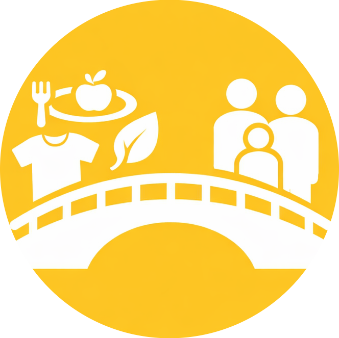

Our Team
We are a team of students from ACT, driven by the desire to create meaningful social impact through technology. Harsha Vardhan, Lahari Yadav, Archana Ram, and Venu Gopal came together to develop this project after observing two critical problems that exist widely in our society. Our goal is to build a solution that responsibly reduces waste while ensuring dignified support reaches those in need.

Why was this website created?
Website acts as a responsible bridge between donors and receivers by ensuring verification, transparency, and proper distribution. Through this platform, we aim to reduce waste while creating meaningful social and environmental impact.

What real problem does it solve?
The platform solves the real-world problem of wastage of usable resources while many people still lack access to basic necessities. It ensures that donations are verified, responsibly managed, and distributed to genuine receivers. By doing so, it reduces waste, improves transparency, and promotes eco-friendly and dignified social support.

Contact Us
📍 CMR college,Hyderabad,kandlayakoya
📞 +91 90148 15790
✉️ support@wastetowellfarehumanitybridge.org